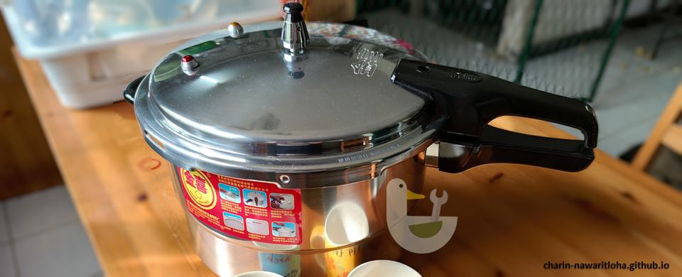

การประกอบ และวิธีใช้หม้อต้มความดัน (หม้อผลิตจากจีน)

ผมซื้อหม้อความดันจากเว็บออนไลน์ เป็นหม้อที่ผลิตในประเทศจีน และนำเข้ามาขายแบบดิบ ๆ เลยคือไม่มีคู่มือหรือฉลากภาษาไทยเลย นอกจากแปะว่าบริษัทไหนนำเข้ามาเท่านั้น ต้องศึกษาวิธีใช้งานด้วยตัวเอง เลยเอามาเขียนสรุปไว้เผื่อคนอื่นจะติดปัญหาหรือสงสัยว่าใช้งานอย่างไร
ผมซื้อมาในราคา 717 บาท (มีส่วนลดร้าน + คูปองฟรีค่าส่ง) หม้อขนาด 28 เซ็นติเมตร 11 ลิตร
ประกอบด้ามจับ
ด้ามจับจะมี 2 ชิ้น ติดที่ตัวหม้อ 1 ชิ้น และติดที่ฝาหม้ออีก 1 ชิ้น โดยอุปกรณ์ที่ต้องใช้ในการประกอบคือไขควงปากแฉก
ข้อควรทราบ เพื่อความปลอดภัยก่อนใช้งาน
- หากทำอาหารต้มทั่วไป ใส่อาหารได้สูง 2 ใน 3 ของหม้อเท่านั้น หากใส่สูงกว่านี้จะมีปัญหาเรื่องอาหารกระเด็นไปอุดท่อระบายแรงดันที่ฝาหม้อหรือน้ำต้มกระเด็นออกมาเลอะฝาหม้อ
- หากทำอาหารที่มีการขยายตัว เช่น ถั่ว ข้าว ข้าวโพด สาหร่ายทะเล ให้ใส่ได้เพียงครึ่งหม้อเท่านั้น
- หากวาล์วนิรภัยทำงาน แสดงว่าท่อระบายแรงดันตันเนื่องจากมีเศษอาหารไปอุด ให้ปิดแหล่งกำเนิดความร้อนทันที รอความดันลด แล้วเปิดหม้อและทำความสะอาดท่อระบายแรงดันตรงกลางฝาหม้อก่อนใช้งานต่อ
- สามารถลดความดันในหม้อโดยการเอาก้นหม้อแช่น้ำได้
- ห้ามเอาของหนัก ๆ มากดทับจุกระบายแรงดันเด็ดขาด
- หากต้องการระบายแรงดันเพื่อเปิดฝาหม้อ ให้ทำด้วยความระมัดระวัง เนื่องจากจะมีไอน้ำพุ่งออกมาที่รูด้านข้าง
- เฝ้าดูหรือสังเกตเสียงไอน้ำตลอดเวลาที่ปรุงอาหาร อย่าเปิดไฟทิ้งไว้โดยไม่มีคนดู
- ถ้าคุณเป็นคนขี้ลืม ควรเอาโทรศัพท์มือถือมาตั้งเวลาเตือนไว้ ป้องกันหม้อไหม้
- อย่าให้เด็กเล็กเข้าใกล้หม้อขณะใช้งาน เพราะเด็กเล็กอาจเอามือไปจิ้มจุกระบายความดันที่หมุนติ้ว ๆ ทำให้เกิดอันตรายได้รับบาดเจ็บได้
- อะไรที่หม้ออลูมิเนียมใส่ไม่ได้ หม้อนี้ก็ใส่ไม่ได้เหมือนกัน (อาหารที่มีสภาพเป็นกรด ด่าง หรือเกลือสูง)
- หากรู้สึกว่าการหมุนปิดฝาหม้อฝืดเกินไป สามารถทาน้ำมันสำหรับปรุงอาหารที่ขอบหม้อเพื่อเพิ่มความหล่อลื่นได้
การปรุงอาหาร
เมื่อปรุงอาหารด้วยหม้อแรงดัน เมื่อความดันถึง 70 KPa หม้อจะเริ่มระบายแรงดันที่เกินออกมาที่จุกด้านบนตรงกลางฝาหม้อ จะมีเสียงเป็นเรื่องปกติ วีดีโอด้านล่างปิดเสียงเอาไว้ หากต้องการฟังเสียงไอน้ำต้องจิ้มเปิดเสียงด้วยนะครับ
จุดสังเกตุบนฝาหม้อ จะมีวาล์วนิรภัย ในการปรุงอาหารปกติวาล์ว 2 ตัวนี้จะไม่ทำงาน แต่หากท่อระบายแรงดันตรงกลางตันจนแรงดันในหม้อสูงเกินไป ไอน้ำจะรั่วออกมาจากวาล์วนิรภัย ให้รีบปิดแหล่งกำเนิดความร้อนทันที และตรวจสอบว่ามีอาหารไปอุดท่อระบายแรงดันหรือไม่ (ต้องรอให้แรงดันลดลงก่อนถึงจะเปิดหม้อได้)
สลักนิรภัยจะดันตัวสูงขึ้นมาเพื่อป้องกันไม่ให้เปิดฝาหม้อ หากต้องการเปิดฝาหม้อต้องระบายแรงดันก่อน
วิธีการระบายแรงดัน ให้ทำการดันให้จุกปิดท่อระบายแรงดันที่หมุน ๆ อยู่เอียงไปด้านหนึ่ง จากนั้นไอน้ำจะพุ่งออก สำหรับมือใหม่แนะนำให้คอย ๆ ลองดูก่อนว่าไอน้ำมันพุ่งออกมาทางไหน ให้ดันจนแรงดันหมด สลักจะตกลงไป จึงสามารถเปิดฝาหม้อได้

ระยะเวลาในการทำอาหารที่แนะนำจากคู่มือ
ด้านล่างเป็นข้อมูลจากคู่มือที่แนบมากับหม้อนะครับ ซึ่งในการปรุงอาหารจริงคงต้องดูหน้างานว่าต้องเพิ่มหรือลดเวลาเท่าไหร่ โดยเวลาที่ระบุเป็นเวลาที่เริ่มนับหลังจากแรงดันสูงจนมีเสียงระบายไอน้ำ
- ขาหมู 1 กิโลกรัม น้ำ 0.5 กิโลกรัม ใช้เวลา 20 นาที
- ไก่ 1.5 กิโลกรัม น้ำ 1 กิโลกรัม ใช้เวลา 13 นาที
- ปลา 0.8 กิโลกรัม น้ำ 0.25 กิโลกรัม ใช้เวลา 5 นาที
- ซี่โครง 1 กิโลกรัม น้ำ 0.7 กิโลกรัม ใช้เวลา 8 นาที
- เนื้อวัว 1 กิโลกรัม น้ำ 0.5 กิโลกรัม ใช้เวลา 15 นาที
- หุงข้าว 1 กิโลกรัม ปริมาณน้ำตามประเภทข้าว ใช้เวลา 4 นาที
- ข้าวต้ม 1 กิโลกรัม ปริมาณน้ำตามประเภทข้าว ใช้เวลา 0 นาที
คู่มือต้นฉบับที่แปลด้วย Google Translate
เป็นภาพที่จับมาจากโปรแกรมโดยตรง คำแปลอาจแปลก ๆ หน่อย แต่พออ่านดูรู้เรื่อง 😅